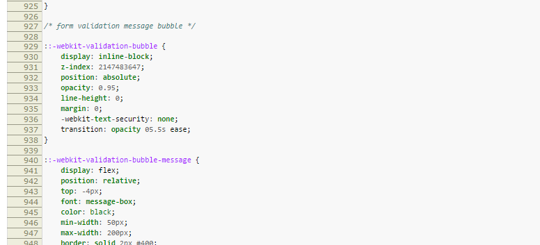

Cúanto Sinvergüenza Suelto
Cascade Style Sheets
Paul Melero
Cúanto Sinvergüenza Suelto
Cascade Style Sheets
| Block Level elements | Line Level elements |
(HTML 4 [1997 - 2007])
|
|
HTML 5.1(2016)
The <div> element has no special meaning at all.
https://www.w3.org/wiki/HTML/Elements/div
(4.4 Grouping content)
The <span> element doesn't mean anything on its own
https://www.w3.org/TR/html5/text-level-semantics.html#the-span-element
(4.5 Text-level semantics)
Conocer el modelo de caja
box-sizing: content-box;
padding: 0;
border: 0;
border-box)DevTools es tu amigo üôå
La herencia de CSS no tiene nada que ver con la herencia de OOP.
Hello world!
Por defecto, los estilos tienen un alcance global.
Pregunta trampa: ¿De qué color se pinta?
Caso especial: Es lo que primero computa en la cascada en un UA (navegador): UA CSS
En resumen: el orden dónde se llama a las cosas
p.clase {
foo: bar; /* 1 */
}
.clase {
foo: baz; /* 2 */
}
Pregunta ~trampa: qué regla se computa?
Propiedad: acumulativa y
.clase {
foo: bar!important; /* 1 */
}
.clase {
foo: baz; /* 2 */
}
!important es el reflejo de maquetadores/as vagos/as!
üí•
border-box)Algunas, tambi√©n, paradigmas de arquitectura üè∞
Tantas convenciones como Frameworks de JS!
El HTML no es arbitrario.
texto
texto
texto
- texto
- texto
- texto
texto
texto
texto
!importants, estilos en línea, selectores de ID...$$$$x("//p[a]")$0 // ($1, $2, $3...)copy()clear()dir()contenteditable="true"document.designMode = 'on'
*,
*:before,
:after {
background-color: rgba(255, 0, 0, .15);
}
üôè‚úäüí™üòã
https://gangsthub.github.io/layout-or-get-out/#/
npm i && npm start